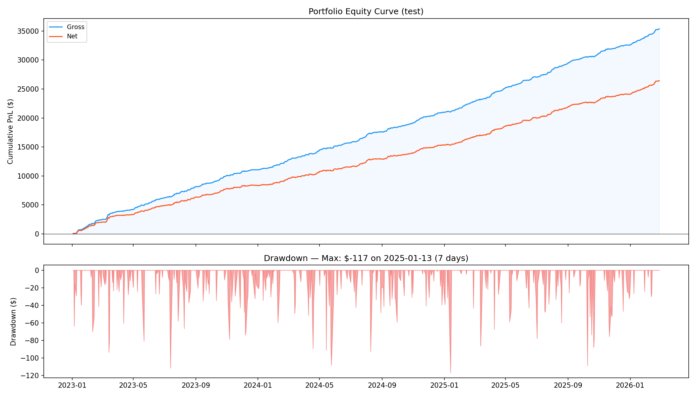
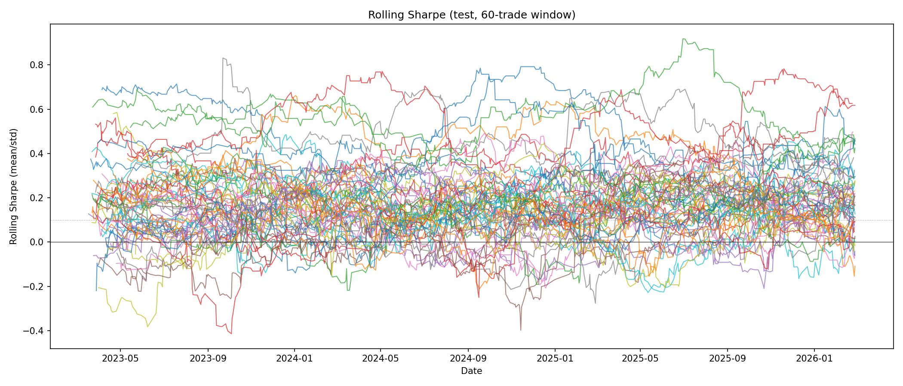
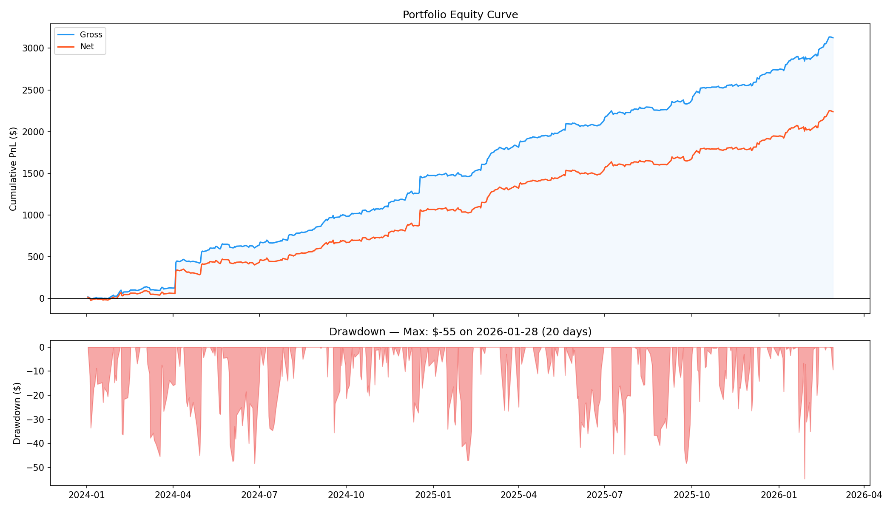
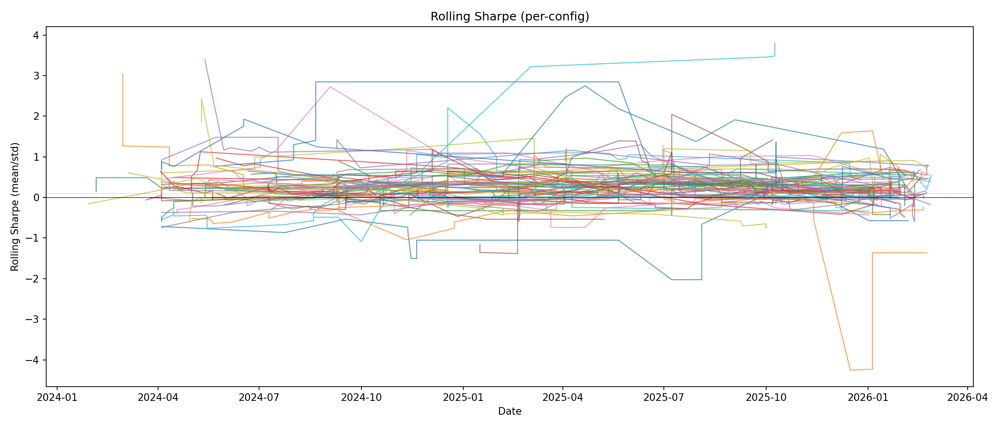

Algorithmic Trading System
US Equities — Live Trading via Alpaca API
A solo research project in systematic intraday trading, developed independently outside of work hours. Designed the full pipeline—from hypothesis generation and data infrastructure to statistical validation and live deployment—treating each strategy as an empirical question with strict out-of-sample evaluation.
Strategies
- Opening Range Momentum Deployed
- Candlestick Rejection Deployed
- Mean-Reversion Dip Concluded
- Fair Value Gap Pairs Concluded
- Liquidity Sweep Concluded
- Stochastic Mean-Reversion Concluded
- VWAP Crossover Concluded
Opening Range Momentum
DeployedIntraday directional strategy on US equities at market open. Multi-phase validation pipeline with strict out-of-sample evaluation across 10 years of data.
- OOS Sharpe 11.1, net EV +12.1 bps/trade, 76.7% positive days (2023–2026)
- 99.2% monthly win rate across 122 months (2016–2026)
- Per-trade EV stable at +9 to +13 bps across all years
- Currently deployed and trading live


Candlestick Rejection
DeployedIntraday mean-reversion strategy triggered by price action patterns under certain market conditions. Screened 199 tickers with strict out-of-sample validation.
- OOS Sharpe 3.9, net EV +13.2 bps/trade, portfolio p = 0.0001
- Edge survives top-5% winner removal—not driven by outliers
- 88.5% monthly win rate (2024–2026)
- Currently deployed and trading live


Mean-Reversion Dip
ConcludedExplored whether intraday pullbacks from recent highs create mean-reversion opportunities.
- Comprehensive evaluation across 99 tickers with multiple timeframes
- Exploring refined entry criteria and cost-aware signal filtering
Fair Value Gap Pairs
ConcludedInvestigated whether sequential fair value gaps carry predictive information about price continuation or reversal.
- 25.8M gap pairs analyzed across the full ticker universe
- Signal requires further investigation with alternative gap definitions and filtering criteria

Liquidity Sweep
ConcludedDesigned a paired-delta methodology to isolate sweep-specific directional effects from confounders (time-of-day, volatility, VWAP displacement).
- 2.5M+ observations with sufficient power to detect edges as small as 0.2 bps
- Investigating additional structural filters and signal combinations


Stochastic Mean-Reversion
ConcludedModeled intraday price as an Ornstein–Uhlenbeck process and iteratively refined the strategy across multiple research phases.
- Each phase diagnosed specific failure modes and attempted targeted fixes
- Exploring signal-to-noise improvements at intraday timescales

VWAP Crossover
ConcludedTested whether VWAP crossings with divergence thresholds signal institutional flow.
- Comprehensive evaluation across 41 tickers with divergence thresholds
- Exploring additional filters and signal combinations